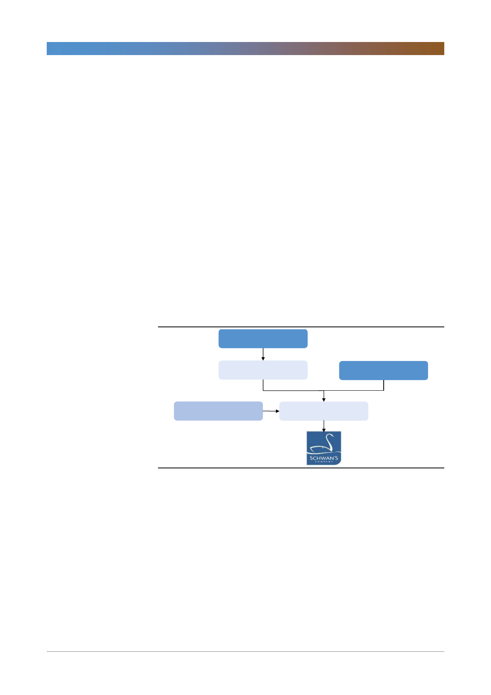

CJ제일제당(097950)
냉동피자와 냉동파이 시장 자체의 성장성은 높지 않다. 하지만 강력한 채널/영업
기반이 있어 특히 B2B향으로 비비고만두와 같은 CJ제일제당의 제품의 판매 확
장이 보다 쉬워질 것이다. 한국과는 달리 B2B쪽 마진이 B2C대비 월등히 높다는
점도 채널/영업기반이 약했던 동사에게는 매력적인 투자 포인트가 되었을 것이다.
회사는 쉬완스와 기존 미국 사업을 합친 총 미국 매출액을 2018년 2.7조원에서
2022년 4.6조원으로 연평균 14.2% 증가시킬 계획이며, 영업이익률도 7.6%에서
2022년까지 8.5%로 올려 영업이익도 연평균 17.6% 증가시킬 계획이다.
영업의 안정성, 가시성 향상으로 주가에는 긍정적으로 작용 예상
유관 사업체를 인수한 것이므로, 투자 금액에 특별한 이슈가 없다면 투자 평가의
공은 이제 시너지가 얼마나 발생할 것인지이다. 동사의 한식 제조 기술 경쟁력은
세계 최고이나 미국 소비자들이 얼마나 빨리 이를 받아들일 것인지가 관건으로
보인다. 결론적으로 쉬완스 인수는 주가 상승의 걸림돌을 제거했다는 측면에서
긍정적으로 평가한다. 투자 자체에 대한 평가를 내리기는 아직은 이른 시점인 것
으로 보인다. 그러나 투자의 불확실성 제거, 그리고 신규 투자 부문이 식품이라는
사실을 상기할 때 미래 영업 실적의 안정성과 가시성이 높아지는 이벤트라는 평
가다.
[그림 1] 인수 구조 및 지배 구조
CJ제일제당
(80%, $13.4억, 1.521.9십억원)
SPC
Trust
(20%, 380.5십억원)
인수금융
($5.0억, 566.2십억원)
SPC
자료: CJ제일제당, 한국투자증권
2